De Saramacca Haulroad Construction is een mijnbouw‑infrastructuurproject
in Suriname waarbij een transportweg werd aangelegd in het Saramacca‑gebied op RGM.
Het ligt in het binnenland en verbindt de mijnlocaties met de hoofdwegen en exportpunten.
De weg is bedoeld voor het zware vervoer van materialen en ertsen uit de mijnbouwoperaties.
Het project werd gebouwd door een Joint Venture van Haukes Construction N.V., SEMC en
Baitali.
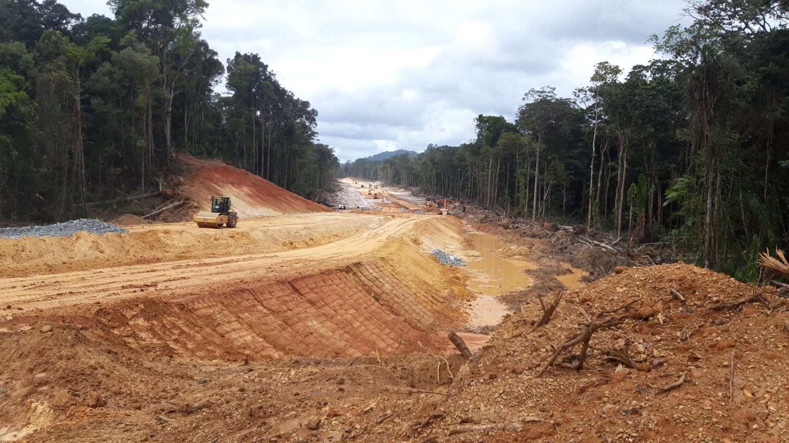
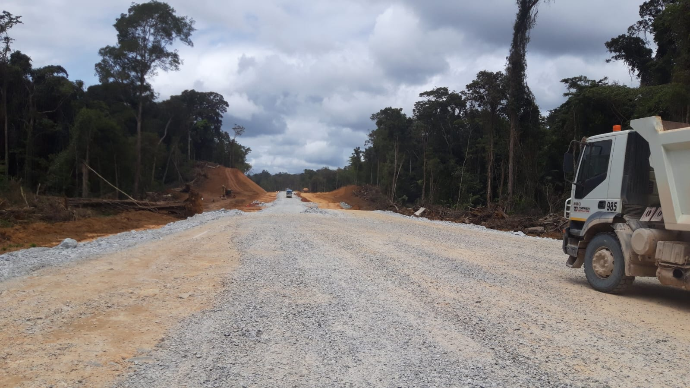
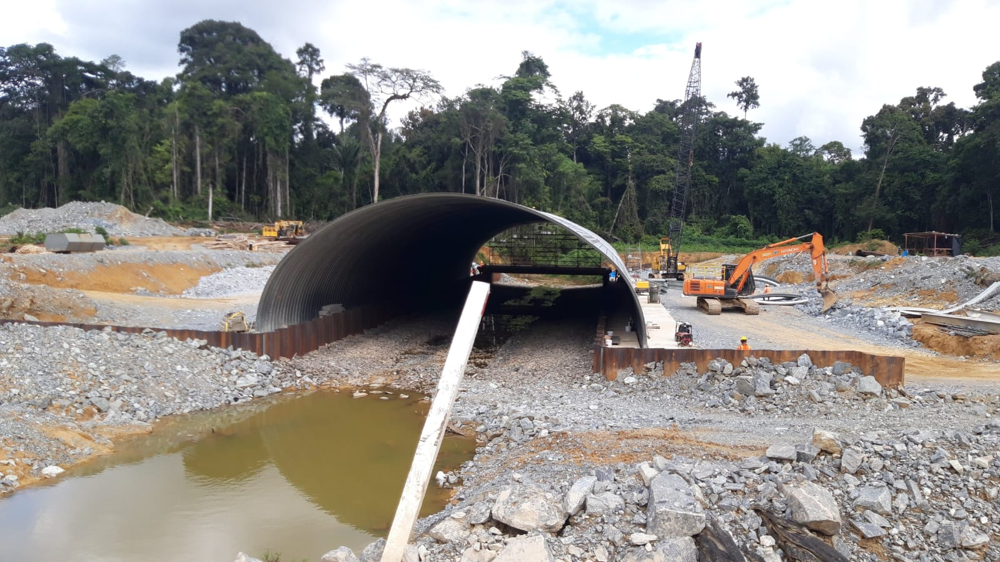
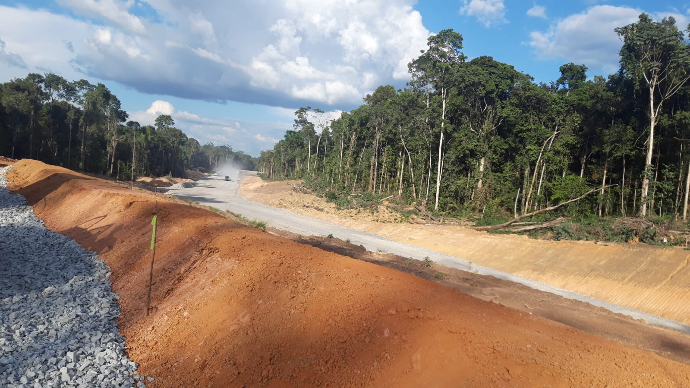
Het proces van bauxietwinning omvat het delven van het erts,
het transporteren naar verwerkingsfaciliteiten en het vervolgens wassen
en drogen om het geschikt te maken voor export.
Dit vondt plaats bij First Bauxite Company "GINMIN".
De naam First Bauxite verwijst naar First Bauxite Corporation,
een mijnbouwbedrijf dat actief is in Guyana. Hun belangrijkste project is de
Bonasika Bauxite Project, gelegen in de regio Essequibo Islands–West Demerara,
ten westen van Georgetown.
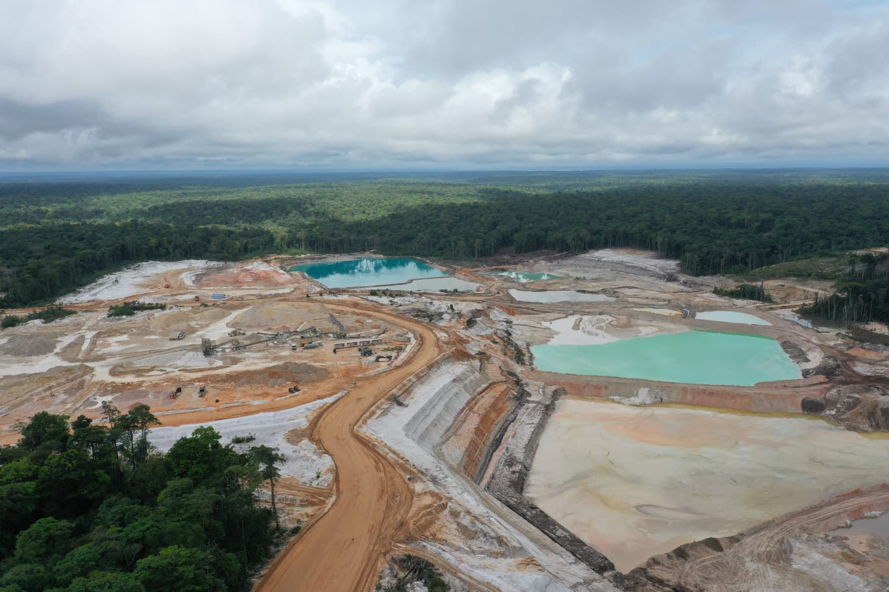
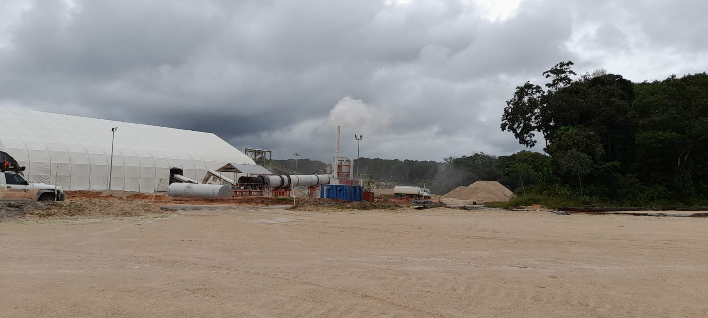
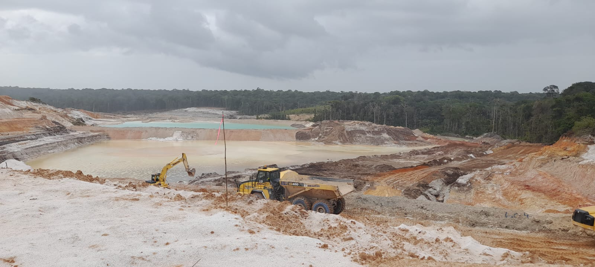
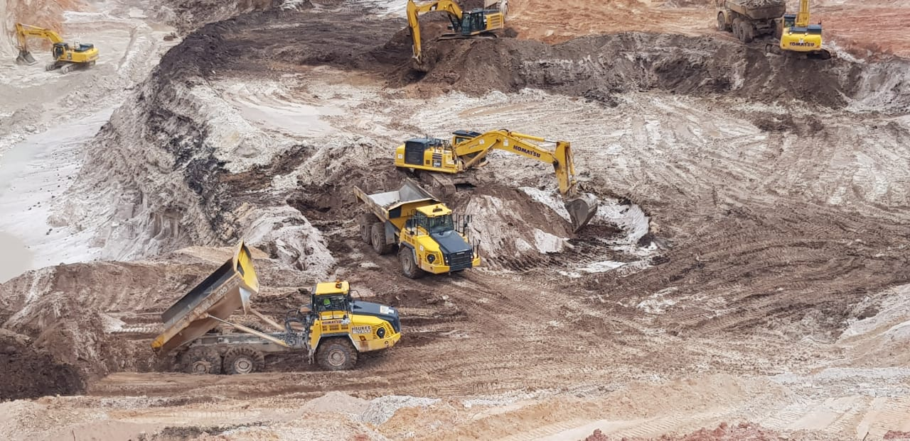
Haukes Construction N.V. is een aannemingsbedrijf dat architectonische en civieltechnische constructies realiseert in Suriname. Deze zijn onderverdeeld in de volgende categorieën: ontwerp en engineering; architectonische bouwwerken voor de publieke en private sector, zoals industriële faciliteiten, kantoren, winkels en woonaccommodaties; civieltechnische constructies zoals betonnen ondersteuningsstructuren, bruggen, (stalen) damwanden en havenfaciliteiten. Daarnaast beschikt Haukes Construction N.V. over de mogelijkheid om voorgespannen betonnen palen tot 29 meter (enkele lengte) te produceren. Ook voeren wij hijswerkzaamheden uit tot 150 ton.
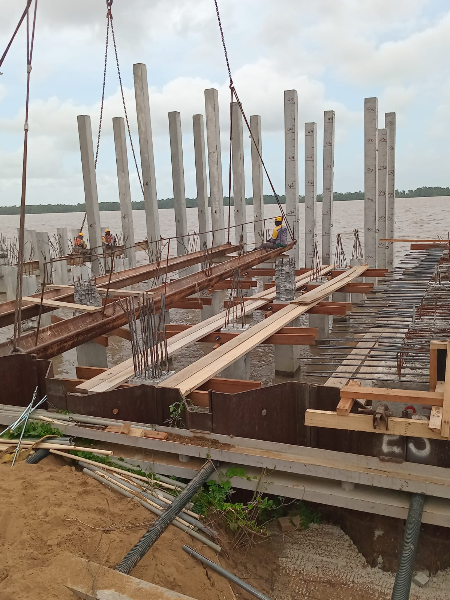
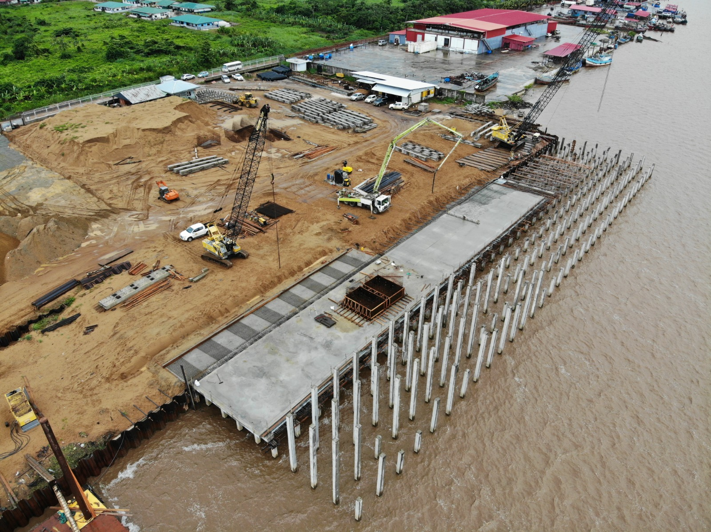
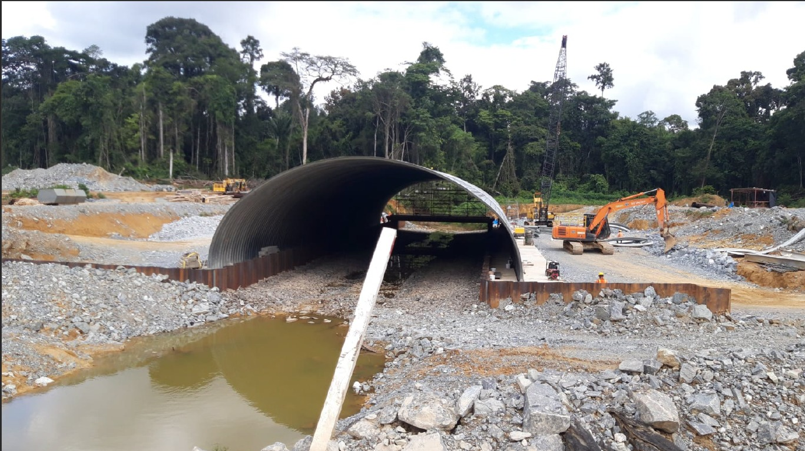
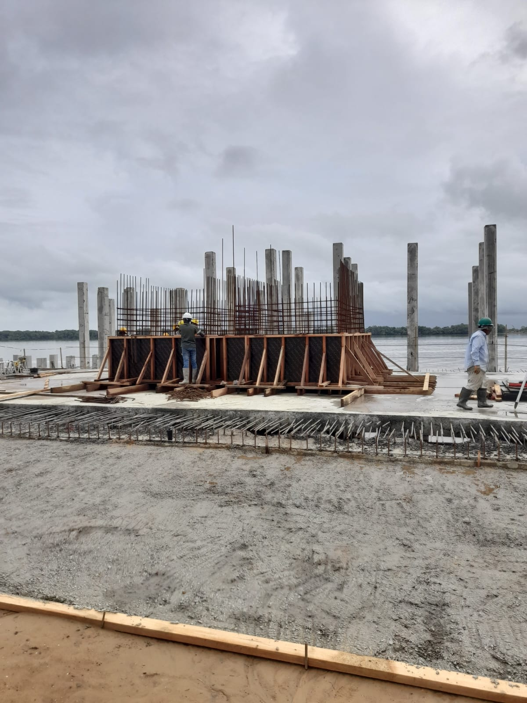
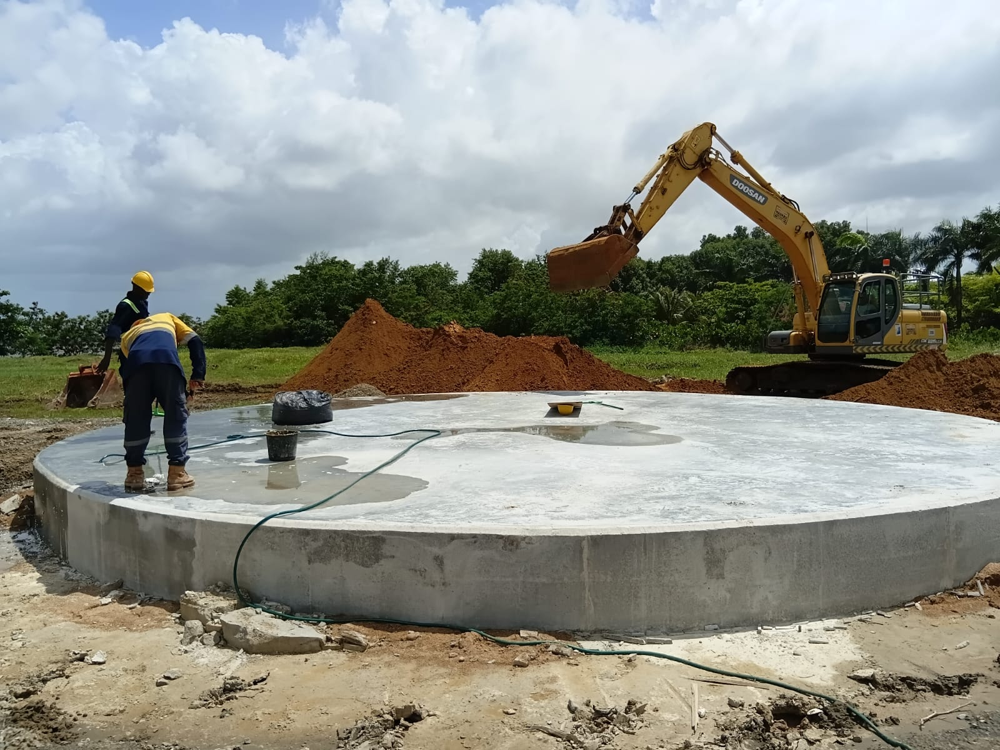
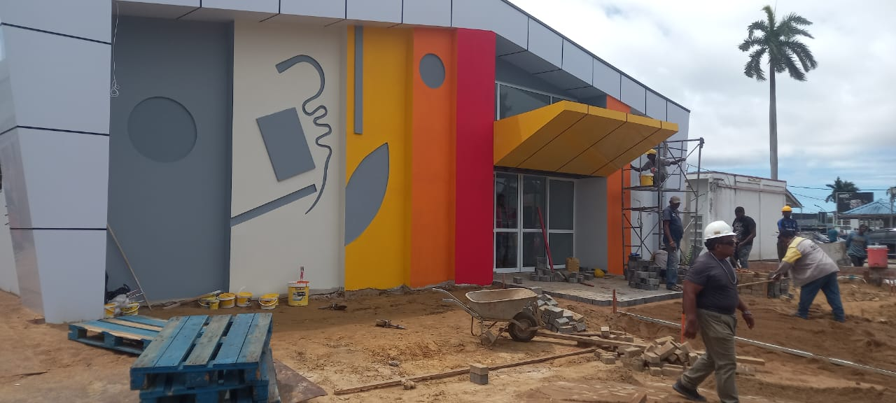
De Air Gesture Wall Switch is een innovatief prototype waarmee verlichtingen worden bediend zonder aanraking. Door middel van een sensor en een microcontroller (zoals de ESP32) worden handgebaren gedetecteerd om bijvoorbeeld een lamp aan of uit te schakelen. Dit project laat zien hoe technologie kan worden toegepast voor contactloze bediening en gebruiksgemak. Het prototype is ontwikkeld om het concept te testen en verdere verbeteringen mogelijk te maken.
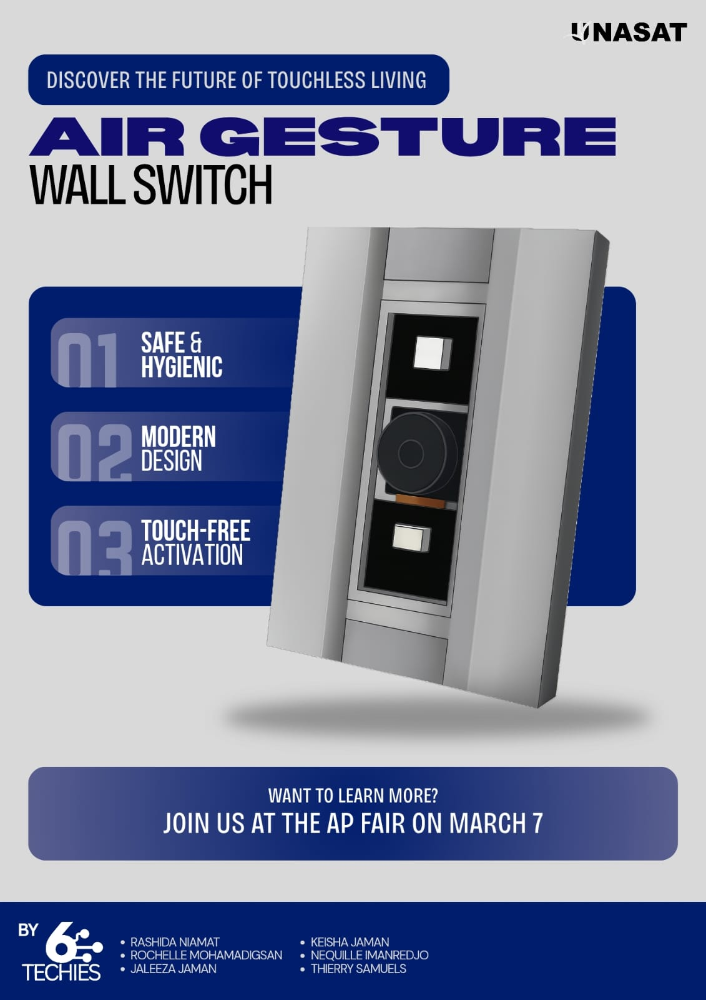